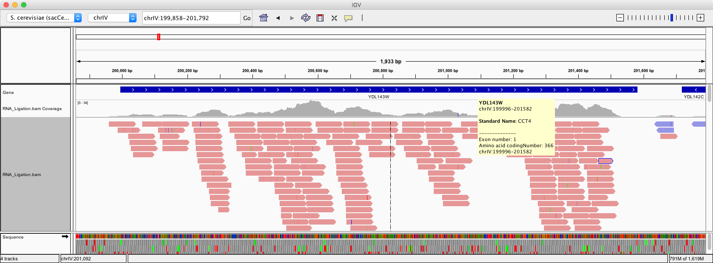
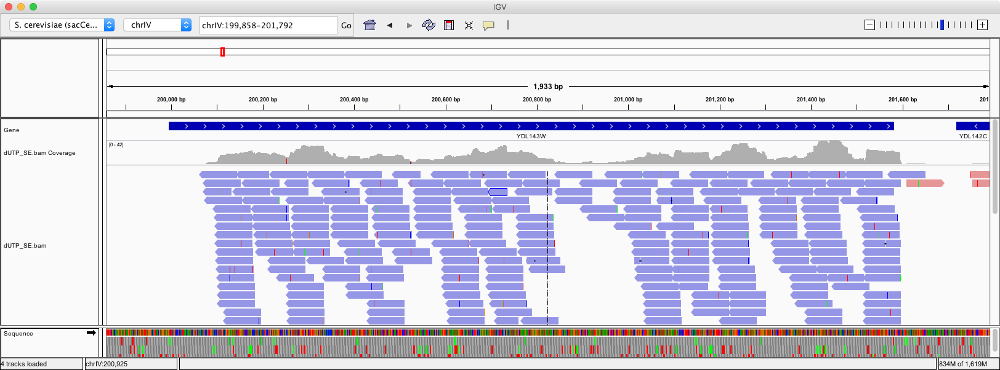
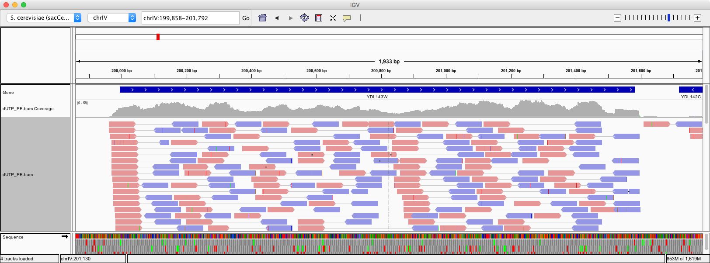

{% extends "unitbase.html" %}
{% load pytags %}
{# title = Strand Specific RNA-Seq #}
{# subtitle = strand specific transcriptome analysis #}
{# name = Strand-specific RNA sequencing methods #}
{% block body %}
{% markdown %}
The data for this paper can be found at:
* [Comprehensive comparative analysis of strand-specific RNA sequencing methods 11(8):e1004393.
Nature Methods 7, 709–715 (2010) ][nmeth.1491] by Joshua Z Levin, Moran Yassour, Xian Adiconis, Chad Nusbaum,
Dawn Anne Thompson, Nir Friedman, Andreas Gnirke & Aviv Regev.
[nmeth.1491]: http://www.nature.com/nmeth/journal/v7/n9/full/nmeth.1491.html
Download the run information for paper
esearch -db sra -query PRJNA127357 | efetch -format runinfo > runinfo.txt
Investigate what we know about the runs:
cat runinfo.txt | tabtk cut -d csv -f 1,7,12,16,17
It produces the following information
Run avgLength LibraryName LibraryLayout InsertSize
SRR059162 76 GSM542247: RNA Ligation SINGLE 0
SRR059163 76 GSM542248: Illumina RNA Ligation SINGLE 0
SRR059164 76 GSM542248: Illumina RNA Ligation SINGLE 0
SRR059165 76 GSM542249: Illumina RNA Ligation - SPRI SINGLE 0
SRR059166 76 GSM542249: Illumina RNA Ligation - SPRI SINGLE 0
SRR059167 102 GSM542250: SMART PAIRED 144
SRR059168 102 GSM542250: SMART PAIRED 144
SRR059169 152 GSM542251: Hybrid PAIRED 220
SRR059170 152 GSM542251: Hybrid PAIRED 220
How big is the yeast genome?
samtools faidx ~/refs/sc/sacCer3.fa
cat ~/refs/sc/sacCer3.fa.fai |awk '{sum += $2; print sum/10^6, "million" }' | tail -1
produces
12.1571 million
How many reads N with lenght `L=76` bp would produce `10x` coverage?
C = N * L / G
hence
N = C * G / L
That can be computed as:
echo '10 * 12 / 76' | bc -l
`N = 1.5 million` reads. But the transcriptome is much shorter than the genome and in addition
it expresses at different rates. Let's estimate the transcript size. Get the same data as displayed in IGV.
# Download the tab formatted data from UCSC.
curl http://hgdownload.soe.ucsc.edu/goldenPath/sacCer3/database/sgdGene.txt.gz | gunzip -c > sgdGene.txt
# We can turn that into a BED file.
cat sgdGene.txt | awk ' {OFS="\t"; print $3,$5,$6,$2,0,$4 } ' > genes.bed
# Compute the running lenght of transcriptome
bedtools merge -i genes.bed | awk '{ sum=sum + $3 - $2; print sum } ' | tail -1
with the new transcript size `G=8.9` million so the 10x average coverage leads to `N = 1.2 million` reads.
The difference here is not radical because the yeast genome is tightly packed with genes, higher order eukaryotes
usually have a more sparse genome.
Download the data, 1 million reads from two experiments one is RNA Ligation the other dUTP library preparation.
# This dataset is an RNA Ligation method.
fastq-dump -X 1000000 --split-files SRR059163
# This dataset is a dUTP method.
fastq-dump -X 1000000 --split-files SRR059176
Check what the experiments say:
cat runinfo.txt | tabtk cut -d csv -f 1,7,12,16,17
Since we want to display in IGV we need to download the same yeast genome file to align against
#
# Download the sacCer3 genome build that is available inside IGV
#
mkdir -r ~/refs/sc
# Download the file, uncompress and concatenate into one file.
curl http://hgdownload.soe.ucsc.edu/goldenPath/sacCer3/bigZips/chromFa.tar.gz | tar xzvf > ~/refs/sc/sacCer3.fa
# Index the yeast genome file.
bwa index ~/refs/sc/sacCer3.fa
Generate the alignments:
# Bam file conversion.
alias bam='samtools view -b - | samtools sort -o - booyah'
# The first experiment is RNA ligation.
bwa mem ~/refs/sc/sacCer3.fa SRR059163_1.fastq | bam > RNA_Ligation.bam
samtools index RNA_Ligation.bam

The second experiment is with dUTP. This is a paired end run but we'll run just the first file
what it would look like if it were single end run.
bwa mem ~/refs/sc/sacCer3.fa SRR059176_1.fastq | bam > dUTP_SE.bam
samtools index dUTP_SE.bam
**Note**: This method produces data from the strand opposite to the transcript.

> What is essential to note here is that in strand specific RNA-Seq depending on the library preparation the same mRNA extraction
> may produce data from the original transcript or its reverse complement. The dUTP method will produce
> reads from the opposite strand. The nomenclature that software packages use to distinguish between the two
> can be confusing. Depending on the tool rhe same words say *first-strand* will be used to designate
> the first method or the second. Always read the manual.
Finally we'll run the dUTP data in paired end mode.
bwa mem ~/refs/sc/sacCer3.fa SRR059176_1.fastq SRR059176_2.fastq | bam > dUTP_PE.bam
samtools index dUTP_PE.bam
The paired end stranded RNA-Seq is harder to read but still easy to tell. Watch the read towards the
ends of transcripts. What orientation are they?

### RNA-Seq coverages
# Need to turn it into a BED file so that bedtools can use it as file B
bedtools bamtobed -i RNA_Ligation.bam -split > RNA_Ligation.bed
# Computes the coverage of file B over file A
bedtools coverage -a genes.bed -b RNA_Ligation.bed > RNA_Ligation_coverage.txt
Our BED file has six columns, the coverage tool adds four more (see bedtools coverage help):
After each entry in A, reports:
1. The number of features in B that overlapped the A interval (Ni).
2. The number of bases in A that had non-zero coverage.
3. The length of the entry in A (Li).
4. The fraction of bases in A that had non-zero coverage.
Sort by the 7th column to get the genes with the highest read counts.
cat RNA_Ligation_coverage.txt | sort -k7,7 -rn | head
### Computing RPKM, TMP
The RPKM formula for gene `Gi` is `10^9 * Ni/Li/N` the TMP formula is `10^6* Ni/Li/T`
The 7th column is the coverage. Lets make a file with Gene, Counts, RPKM and TPM. But first we need to estimate
the total transcript size = Sum(Ni/Li). How many aligned reads do we have?
samtools view -c -F 4 RNA_Ligation.bam
# Gives us N = 908321
The coverage file contains the `Ni` and `Li` numbers, this gives us `T`:
cat RNA_Ligation_coverage.txt | awk '{ frac=$7/$9; sum += frac; print "T =", sum }' | tail -1
# T = 1359.17
Fill in the RPKM and TMP numbers:
# columns: gene name, gene length, count, RPKM, TPM
cat RNA_Ligation_coverage.txt | awk '{ OFS="\t"; N=908321; T=1339; print $4, $9, $7, 10^9 * $7/$9/N, 10^6 * $7/$9/T } ' > expression.txt
You can now sort `expression.txt` by `counts`, `RPKM` or `TPM`:
# Genes with highest TPM
cat expression.txt | sort -k 5,5 -rn | head
{% endmarkdown %}
{% endblock %}